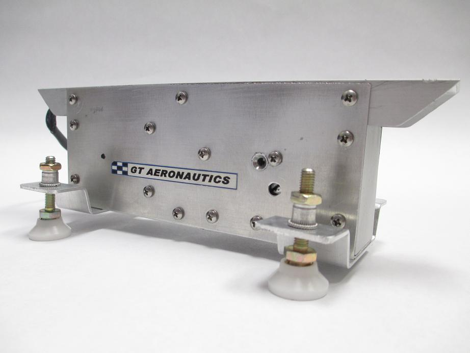
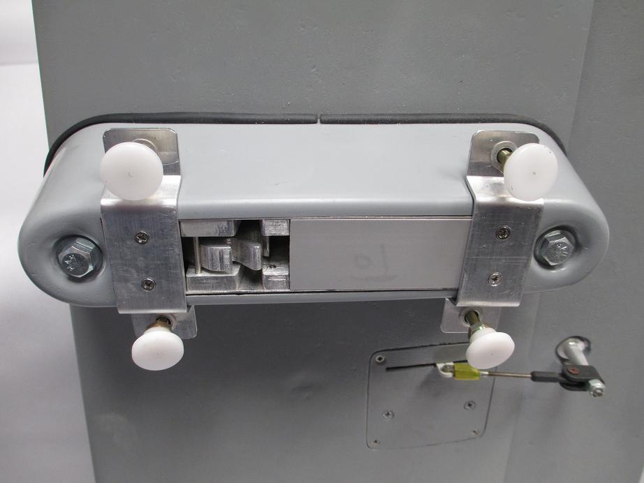

Advanced Munitions Carriage for UAS
GT Aeronautics designs and manufactures the Stores Release Unit (SRU) to fill a DoD technology gap, permitting carriage of small stores, munitions, or weapons (less than 25 pounds) aboard small and mid-size unmanned aircraft.
The SRU is supplied with a standard mounting bracket and can be attached to the underside of wings or on the bottom of the fuselage. Customized mounting brackets are available.
| Length | 6 inches |
| Width | 1.25 inches |
| Height | 2.5 inches |
| Weight | 16.5 ounces |
| Max Payload | 25 pounds |
| Voltage | 12-28 VDC |
| Store Mounting Lug | 3/16" diameter |


Four screw-down pads stabilize the store and a removable safety pin mechanically prevents inadvertent activation prior to launch. Electronic safety devices are recommended.
Each SRU is completely self-contained and can operate manually or with a simple electronic signal pulse via Ground Control Station computers that are interfaced with ordinary autopilot installations. The SRU requires 12-28 VDC for activation of the release solenoid.
Installation Note: The SRU installation should include the fiberglass cover (optional) to reduce drag and protect the SRU from weather, dirt, and/or debris during flight operations.